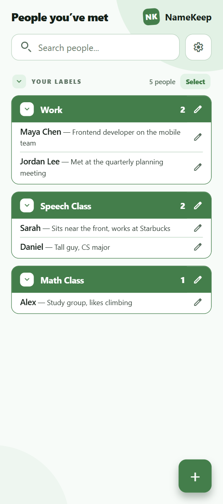
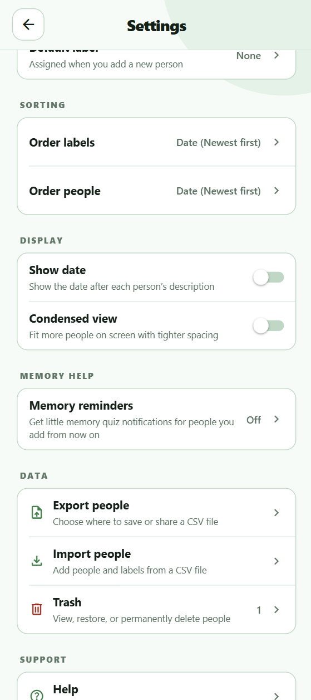

About
I got the idea for NameKeep when I was an undergraduate studying Computer Science at SDSU. I was just terrible at remembering new peoples’ names that I met. I would run into someone I just met the other day, and sometimes two or three times I would have to ask them for their name again (or play that game where you pretend like you remember it and try to figure it out). Sometimes I would even forget someone’s name halfway into our conversation after being introduced. My friend had the same problem, and his solution was to write down peoples’ names in his phone’s notes app. I started doing the same thing and it was really helping me. Both because I could look up people in my lists, but also just because the act of writing it down helped me remember. While it was working well, I realized I could build something a lot better for this problem than your average notes app.
That’s where NameKeep comes in. NameKeep is a simple, easy-to-use, focused mobile app that lets you write down someone’s name, a description, and give them a label, like “Gym”. The whole process is fast and easy. Any one of the fields can be left blank – even the name field, if you forgot their name already and just want to write a description. You can find everyone’s name on the home page, nested under their label. No label? That’s fine too, you can find them under “No label”. There’s a search bar at the top of the page for easy and fast searching. Not only is NameKeep super easy and fast to use, but it also comes with lots of cool customization options. You can color code all your labels, and both labels and people within the labels come with multiple ordering options. You can order by newest, oldest, or alphabetical, separately for both categories.
NameKeep is also backwards compatible, which means if you were already keeping a list of names like I was, you can actually import that data into your NameKeep system. The app does not require a sign in, email, or phone number. NameKeep is designed to keep your data private and secure by storing it locally on your device, and nowhere else. If you want to save or share your data with a friend you can export it as a simple csv file. Exported files are controlled by you, so be careful where you save or send them. Any notifications are opt-in only. You can opt in for memory quizzes (notifications), to help you practice remembering people you met yesterday or the week before. No spam emails. No selling your data to the highest bidder. No ads. And it’s all completely free, made at a loss by me, because I’m just a cool guy like that.
Capture the Details, Fast
Save a person's name, a helpful description, and an optional label in just a few taps. If you only remember where you met or what you talked about, you can save that now and fill in the rest later.
Find Anyone in Seconds
Search across your saved people whenever a name is on the tip of your tongue. NameKeep makes it easy to turn a vague memory into the person you were looking for.
Organize Your Way
Group people with customizable, color-coded labels such as Gym, Work, or Class. Sort labels and people independently by newest, oldest, or alphabetical order to keep your list feeling natural.
Your Data Stays Yours
No account, email address, or phone number is required. Your NameKeep data lives locally on your device, with no ads and no selling of your personal information.
Import and Export with Ease
Already have a list in your notes app? Bring it into NameKeep, then export your data as a simple CSV whenever you want a backup or need to share it.
Practice Remembering
Opt in to memory-quiz notifications for a friendly nudge to recall people you met recently. It is a simple way to strengthen the names that matter before they slip away.

